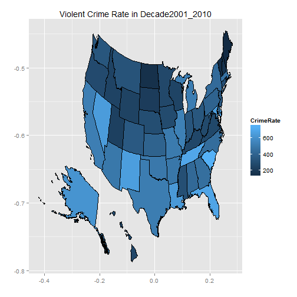

Quandl provides violent crime rates (per 100,000 people) from 1960 through 2010 by State and the data are sourced from the FBI (Uniform Crime Reports as prepared by the National Archive of Criminal Justice Data).
library(Quandl)
# Not required but removes a warning message--- Quandl.auth('yourauthcode')
# Quandl.search('violent crime')
vcData = Quandl("FBI_UCR/USCRIME_TYPE_VIOLENTCRIMERATE")
# save(vcData,file='vcData.rda')
load("vcData.rda")
dim(vcData)
## [1] 51 53
head(vcData, 2)
## Year Alabama Alaska Arizona Arkansas California Colorado
## 1 2010-12-31 377.8 638.8 408.1 505.3 440.6 320.8
## 2 2009-12-31 450.1 633.4 426.5 515.8 473.3 338.8
## Connecticut Delaware District of Columbia Florida Georgia Hawaii Idaho
## 1 281.4 620.9 1330 542.4 403.3 262.7 221.0
## 2 300.9 645.4 1349 612.5 428.0 274.1 246.2
## Illinois Indiana Iowa Kansas Kentucky Louisiana Maine Maryland
## 1 435.2 314.5 273.5 369.1 242.6 549.0 122.0 547.7
## 2 497.2 334.0 282.1 406.6 255.0 642.9 119.9 590.0
## Massachusetts Michigan Minnesota Mississippi Missouri Montana Nebraska
## 1 466.6 490.3 236.0 269.7 455.0 272.2 279.5
## 2 462.6 499.8 244.5 286.3 492.9 287.0 289.4
## Nevada New Hampshire New Jersey New Mexico New York North Carolina
## 1 660.6 167.0 307.7 588.9 392.1 363.4
## 2 705.2 160.4 311.4 632.4 384.4 404.5
## North Dakota Ohio Oklahoma Oregon Pennsylvania Rhode Island
## 1 225.0 315.2 479.5 252.0 366.2 256.6
## 2 266.4 331.9 503.4 260.6 382.3 254.3
## South Carolina South Dakota Tennessee Texas Utah Vermont Virginia
## 1 597.7 268.5 613.3 450.3 212.7 130.2 213.6
## 2 675.2 218.7 666.0 491.0 215.4 134.6 230.8
## Washington West Virginia Wisconsin Wyoming United States
## 1 313.8 314.6 248.7 195.9 403.6
## 2 336.3 305.2 259.1 219.7 431.9
tail(vcData, 2)
## Year Alabama Alaska Arizona Arkansas California Colorado
## 50 1961-12-31 168.5 88.9 164.5 100.7 232.7 149.3
## 51 1960-12-31 186.6 104.3 207.7 107.7 239.0 137.3
## Connecticut Delaware District of Columbia Florida Georgia Hawaii Idaho
## 50 33.6 69.4 587.9 217.8 157.2 24.5 32.5
## 51 36.6 84.0 553.7 223.4 158.8 21.8 38.2
## Illinois Indiana Iowa Kansas Kentucky Louisiana Maine Maryland
## 50 362.2 85.8 23.1 58.4 94.5 135.7 33.7 155.6
## 51 365.1 84.6 23.8 58.4 97.3 153.2 29.8 151.3
## Massachusetts Michigan Minnesota Mississippi Missouri Montana Nebraska
## 50 53.1 207.4 43.4 102.7 166.0 67.0 41.0
## 51 48.8 217.7 42.0 102.7 172.9 67.1 41.8
## Nevada New Hampshire New Jersey New Mexico New York North Carolina
## 50 183.6 14.3 107.0 130 NA 201.0
## 51 145.8 13.3 114.3 143 NA 223.5
## North Dakota Ohio Oklahoma Oregon Pennsylvania Rhode Island
## 50 25.0 80.9 103.3 69.0 97.9 42.9
## 51 14.2 83.7 97.0 69.7 99.0 36.8
## South Carolina South Dakota Tennessee Texas Utah Vermont Virginia
## 50 137.8 35.5 108.2 157.8 49.2 20.0 186.1
## 51 143.7 41.4 91.1 161.0 54.3 9.5 183.7
## Washington West Virginia Wisconsin Wyoming United States
## 50 58.1 63.1 31.5 85.2 158.1
## 51 56.6 64.5 31.9 109.7 160.9
There are 51 rows and 53 columns in the dataset. Data is for 51 years (2010-12-31 through 1960-12-31). 53 columns include a column for Year, each state and the District of Columbia, and the average for the country. Let's now do three things. 1. Create a column denoting the year 2. Drop the column involving date (the existing 'Year' column) 3. Drop the column involving the average for the country 3. Drop the column for District of Columbia, which is not a State.
vcData$Yearonly = 2010:1960 # Creating a new column with Year
vcData = vcData[, -1] # Dropping the existing 'Year' column
vcData = vcData[, -52] # Dropping the column with average for the country
vcData = vcData[, -9] # Dropping the column for Washington DC, the 9th column
Instead of looking at annual data, let's focus on different decades (2001-2010 [rows 1-10], 1991-2000 [rows 11-20], 1981-1990 [rows 21-30], 1971-1980 [rows 31-40], and 1961-1970 [rows 41-50]). Let us compute the mean violent crime rates for each state for each decade. Since 1960 does not fit in to our plans, let us drop that row.
vcData = vcData[-51, ] # Removing the row for 1960, the 51st row
decades = data.frame(Decade2001_2010 = colMeans(vcData[1:10, ], na.rm = TRUE),
Decade1991_2000 = colMeans(vcData[11:20, ], na.rm = TRUE), Decade1981_1990 = colMeans(vcData[21:30,
], na.rm = TRUE), Decade1971_1980 = colMeans(vcData[31:40, ], na.rm = TRUE),
Decade1961_1970 = colMeans(vcData[41:50, ], na.rm = TRUE))
decades$State = row.names(decades) # We needed a column for State and the row names provided that
decades = decades[-51, ] # Remove the row for Yearonly, which is irrelevant.
dim(decades)
## [1] 50 6
head(decades, 2)
## Decade2001_2010 Decade1991_2000 Decade1981_1990 Decade1971_1980
## Alabama 432.5 643.1 519.8 382.5
## Alaska 628.9 685.3 562.8 445.6
## Decade1961_1970 State
## Alabama 216.9 Alabama
## Alaska 157.5 Alaska
tail(decades, 2)
## Decade2001_2010 Decade1991_2000 Decade1981_1990 Decade1971_1980
## Wisconsin 248.9 262.4 218.2 134.2
## Wyoming 242.4 269.4 292.0 235.3
## Decade1961_1970 State
## Wisconsin 54.67 Wisconsin
## Wyoming 81.69 Wyoming
The first order of business was to get a US map. A typical map file generated from the maps package does not include Alaska and Hawaii. Scouring the web for someone who might've addressed this issue took me to this post of Kristopher Kapphahn. The post was terrific and provided the complete code for generating such a map. This code, which is in a separate file for those interested in it, was used to generated a file all_us.rda. We use this file below for the map.
load("all_us.rda")
uslessdc = all_us[all_us$STATE_NAME != "District of Columbia", ]
uslessdc$STATE_NAME = factor(uslessdc$STATE_NAME)
uslessdc$CrimeRate = decades[, 1][match(uslessdc$STATE_NAME, decades$State)] # bring value of decade to map data
library(ggplot2)
ggplot(data = uslessdc, aes(x = x_proj, y = y_proj, group = DRAWSEQ, fill = CrimeRate)) +
geom_polygon(color = "black") + ggtitle(paste("Violent Crime Rate in", names(decades[1]))) +
xlab("") + ylab("")

To bring in more clarity, let us classify states into 3 different groups based on their violent crime rates for a decade and color code them differently. Top 1/3 in crime rates (high, denoted by number 3) are most dangerous and middle 1/3 (medium, denoted by number 2) are more dangerous than the bottom 1/3 (low, denoted by number 1).
# Create a new dataframe with crime rate data in decades classified into 3
# levels of crime rate for States for a decade.
decadespct = decades
for (i in 1:5) {
quantile = quantile(decades[, i], c(1/3, 2/3))
decadespct[, i] = with(decades, factor(ifelse(decades[, i] < quantile[1],
"1", ifelse(decades[, i] < quantile[2], "2", "3"))))
}
head(decadespct, 2)
## Decade2001_2010 Decade1991_2000 Decade1981_1990 Decade1971_1980
## Alabama 2 3 2 2
## Alaska 3 3 3 3
## Decade1961_1970 State
## Alabama 3 Alabama
## Alaska 2 Alaska
save(decadespct, file = "decadespct.rda")
On to the animation.
library(animation)
saveHTML({
for (i in 1:5) {
uslessdc$CrimeRate = decadespct[, i][match(uslessdc$STATE_NAME, decadespct$State)] # bring value of decade to map data
mycols = c("#4daf4a", "#fc8d62", "red") # Setting a color palette
ggchoropleth = ggplot(data = uslessdc, aes(x = x_proj, y = y_proj, group = DRAWSEQ,
fill = CrimeRate)) + geom_polygon(color = "black") + ggtitle(paste("Violent Crime Rate in",
names(decadespct[i]))) + xlab("") + ylab("") + scale_fill_manual(values = mycols,
labels = c("Low", "Medium", "High")) + theme(legend.position = "top")
print(ggchoropleth)
}
}, img.name = "decadeplots", imgdir = "decadeplots", htmlfile = "decadeplots.html",
outdir = getwd(), autobrowse = FALSE, ani.height = 400, ani.width = 600,
verbose = FALSE, autoplay = TRUE, title = "Violent Crime Rates")
Before we proceed with these, let's quickly modify the decadespct data frame and save it for use in this set of animations. Please see the comments for changes made.
decadespctshiny = decadespct
library(reshape2)
decadespctshiny = melt(decadespctshiny, id = "State") # Reshaping data frame
names(decadespctshiny) = c("State", "Decade_Beginning", "CrimeRateGroup") # Renaming variables
levels(decadespctshiny$Decade_Beginning) = c("2000", "1990", "1980", "1970",
"1960") # For animation purposes, replaced decade names by these numbers (e.g., Decade2001_2010 is labeled as 2000, Decade1991_2000 is labeled as 1990, and so on.
decadespctshiny$Decade_Beginning = as.numeric(as.character(decadespctshiny$Decade_Beginning)) # converting factor to numeric
decadespctshiny$CrimeRateGroup = as.numeric(decadespctshiny$CrimeRateGroup) # Converting character to numeric
library(stringr)
library(plyr)
decadespctshiny = mutate(decadespctshiny, State = str_trim(State), state = state.abb[match(State,
state.name)]) # Adding a column of abbreviated state names - used in rCharts
save(decadespctshiny, file = "decadespctshiny.rda") # this file is used in the shiny app
Lastly, the app. (Please press the play button. You can toggle between the rCharts version and the googleVis version by selecting the relevant tab.) The app's code can be found on github. The app is being hosted on RStudio's shinyapps.io site. This has made deploying shiny apps so much more easier than it used to be previously. Thanks for the wonderful thing.